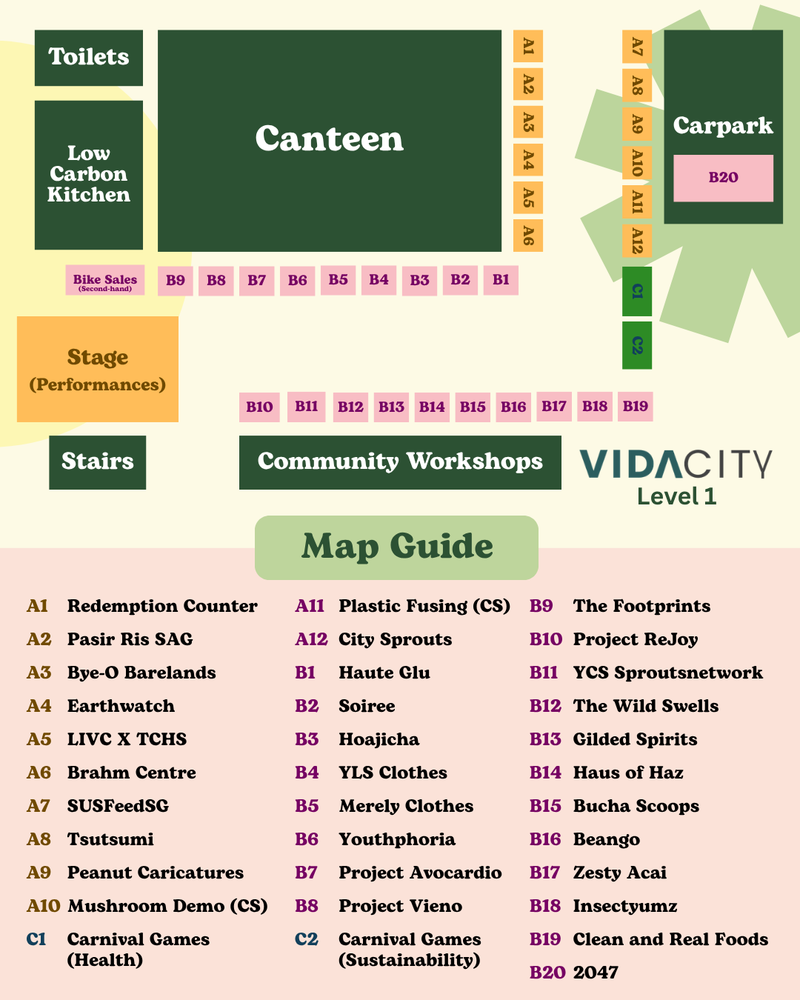

What is The Bettering Run?
The Bettering Run 2026 (TBR26) is a run + post-run carnival returning for its 2nd edition,
supported by The Bettering Branch and The Kampung Spirit Initiative.
Occurring on 13th June 2026, starting from PAssion Wave to Vidacity —
a sustainability-focused innovation hub and living lab — we promise an evening of fun, health and sustainability!
A Better You. A Better Earth. A Better Us!
Why Health & Sustainability together?
Both causes are undermined by the same root behaviours of overconsumption and short-termism, and both require the same mindset shift toward long-term thinking over immediate convenience. Furthermore there are several overlaps between living more healthily and sustainably. Both are under the theme of becoming better! Hence The "Bettering" Run :)
How is The Bettering Run Unique?
The Bettering Run was started by The Bettering Branch in 2025 because we wanted to give our friends & peers a fun entry point into choosing healthier & more sustainable lives.
Vendors are here at no added cost
— We are incredibly lucky to have over 30 booths at TBR26!
Events typically charge vendors a fee to be there,
but our booth vendors are all at TBR at no added cost.
Every single booth vendor at TBR supports Health &/or Sustainability one way or another, and we know running a small business
isn't easy. So we don't charge a
single cent for them to be at TBR! After all, why would we build more barriers towards healthier and sustainable living?
That said, vendors who are able to, have shared a little joy with us in return - in the form of exclusive vouchers
& discounts for our registered runners!
An almost zero waste event — We opt out of traditional decor and banners, and even picked up damaged factory-reject whiteboards for our signages (that we also reuse again and again at The Bettering Branch's other events!)
This very site! — Considering all the waste generated from redemption tags, vouchers, activity stamps etc. we decided to work with our partners to digitalise everything! 100% of vouchers from over 10 partners are all digital, ensuring not a single piece of paper is ever gone to waste.
What can I do at the carnival?
- Learn more about your current habits and exactly how sustainable or healthy they are at our game booths (C1 to C2)
- Visit our thrift pop-up booths (B1 to B6)
- Check out A10 to A12 for activities from Citysprout's Future Forest Festival
- Fuel up with sustainable and healthy eats at the Vidacity canteen OR B14 to B19
- Take an ice plunge at B20
- Visit youth projects supporting Health & Sustainability @ B7-B8, B11-B12
- A7-A8, B9, B12-B13 for sustainable products!
- Learn more about sustainable living & health (A1-A6)
- Refreshments at A1 for runners (Redemption & Info booth!)
Complete both games @ C1 & C2 to win a ticket to the Lucky Draw (& an extra one if you're a registered runner!)
Prizes up for grabs: (One person is only entitled to one prize)
- 1x Nikon Coolpix S500 Vintage Digital Camera
- 1x $50 Gilded Spirits Store Credit
- 1x The Footprints Socks
- 2x Zesty Acai Bowls
- 10x BFT Complimentary Classpasses

At any time, if you require any assistance, just look for our friendly volunteers in green!